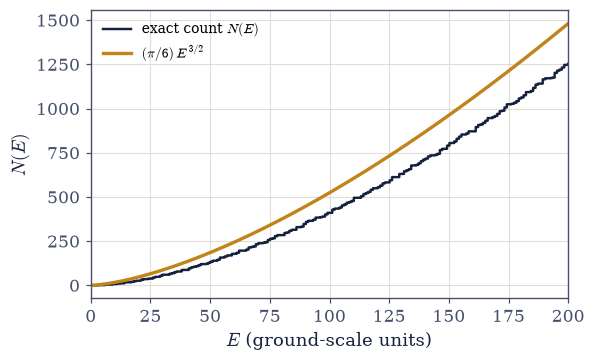
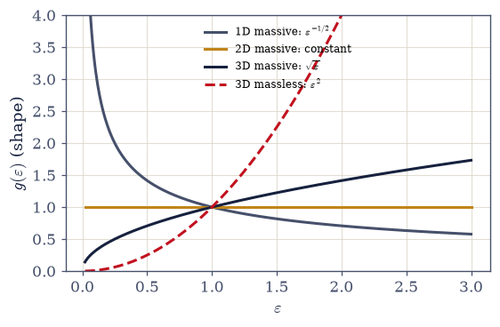
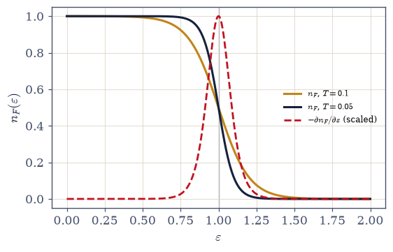
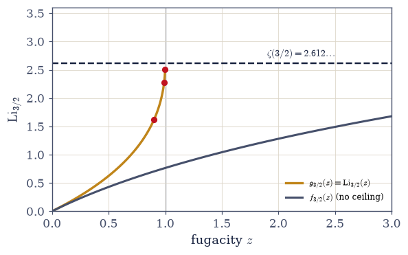

7.3 The Statistical Toolkit: Densities of States, Polylogarithms, and the Bose and Fermi Integrals#
Notebook overview#
This is the third and final notebook of Movement 0, and it does what the last notebook of a toolkit movement should: it assembles the specific working objects that every later notebook will consume, each one built honestly and checked against something independent. The two notebooks before it were about principles — rigidity, causality, saddle points. This one is about equipment.
Four pieces of equipment, in order of use. First, the density of states: the thermodynamics of
a macroscopic system is a sum over its quantum states, and the master move of this volume converts
that sum into an integral, \(\sum_{\text{states}} \to \int g(\varepsilon)\,d\varepsilon\). We refuse
to take \(g(\varepsilon)\) as a formula: the particle-in-a-box modes of §6.10 are integer lattice
points in an octant of \(k\)-space, and we count them — literally, with numpy.meshgrid and a
boolean sum — and watch the staircase \(N(E)\) converge to the continuum sphere-volume formula, with
the deficit shrinking as \(E^{-1/2}\) and carrying a name (Weyl’s surface correction) rather than an
apology. The count is then repeated across dimensions and dispersions, because the exponent of
\(\varepsilon\) in \(g\) is where geometry enters thermodynamics — and two of the volume’s later
dramas hinge on it. Second, the Gamma–zeta–polylogarithm family, the special-function
vocabulary of quantum gases, with the polylogarithm \(\mathrm{Li}_s(z)\) implemented from scratch
and validated three independent ways to eight digits. Third, the Bose and Fermi integrals,
evaluated three ways as well — direct quadrature, series reduction to polylogarithms, and closed
forms falling to the residue-derived zeta values of §7.2 — including a number met three movements
before its fame: \(\int_0^\infty x^3/(e^x-1)\,dx = \pi^4/15\), the arithmetic heart of the
Stefan–Boltzmann law. Fourth, the Sommerfeld expansion, the low-temperature instrument of
every metal calculation, derived and then held to account: its truncation error is measured and
scales as \(T^4\), as advertised.
Two bombs are planted for later movements, deliberately and in plain sight. The two-dimensional density of states is constant — verified by counting — and that innocuous fact is why an ideal gas refuses to Bose-condense in two dimensions (§7.17). And the Bose function \(g_{3/2}(z)\) is monotonically increasing on the physical fugacity range yet bounded by \(\zeta(3/2) = 2.612\dots\), a ceiling it approaches with a vertical tangent: when the physics of §7.17 demands more than \(2.612\), the system will have to do something drastic, and the drastic thing is Bose–Einstein condensation. The toolkit knows things the physics hasn’t said yet.
Conventions (this notebook). Box energies are measured in units of the ground scale \(E_1 = \hbar^2\pi^2/2mL^2\), so a mode \(\mathbf{n} \in \mathbb{Z}_+^d\) has \(\tilde E = |\mathbf{n}|^2\); hard-wall (Dirichlet) counting and periodic counting differ only in surface terms and give the same bulk density of states, so we count the box and speak for both. Spin enters as a multiplicative degeneracy factor \(g_\sigma\) and is set to \(1\) here. The bosonic fugacity is restricted to \(0 < z \le 1\) — previewed here as the domain on which the series make sense, justified physically in §7.7. Polylogarithm partial sums always state their \(k_{\max}\) and a tail bound; near \(z = 1\) the series crawls, and the integral route or
mpmath.polylogis the reference instead — a stated rule, not an improvisation.How to read the checks. Each exercise closes with a
validatecall against an independent fact: the counted staircases converging to the continuum formulas in \(d = 1, 2, 3\) with the \(E^{-1/2}\) Weyl deficit; the polylogarithm agreeing three ways (series,mpmath.polylog, the defining integral viascipy.integrate.quad) to eight digits; the Bose and Fermi integrals closing onto \(\pi^2/6\), \(\pi^4/15\), \(\Gamma(3/2)\zeta(3/2)\), and \(\pi^2/12\) — the residue zetas of §7.2 doing the arithmetic; the Sommerfeld remainder shrinking sixteenfold when \(T\) halves; and the bounded, vertically-tangent approach of \(g_{3/2}\) to its ceiling. A ✓ is strong evidence; a ✗ is a prompt to locate the discrepancy.Scope. The toolkit, not yet the physics: no ensemble is invoked, no temperature is attached to a density matrix (that is §7.4), and the occupations these integrals will average arrive in §7.7. See Pathria & Beale, Statistical Mechanics (Appendices D–E); Ashcroft & Mermin, Solid State Physics (Ch. 2, the Sommerfeld expansion); Arfken, Weber & Harris (special functions). Cross-reference §6.10/§6.16 (the box modes being counted), §7.1 (the keyhole anatomy of these integrands), §7.2 (the residue zetas; \(\zeta(3/2)\) flagged), §5.3 (the classical large-\(N\) toolkit this quantum one parallels), and forward to §7.4, §7.7, §7.10, §7.14, §7.17.
Theory in brief#
From sums to integrals: the density of states#
Everything thermodynamic in this volume will begin as a sum over quantum states, and the first tool converts that sum into an integral,
where \(N(E)\) counts the states with energy below \(E\). For a particle in a hard-wall box of side \(L\) (§6.10), the allowed modes are \(\mathbf{k} = \pi\mathbf{n}/L\) with \(\mathbf{n}\) a positive-integer vector: lattice points in an octant of \(k\)-space. In ground-scale units (\(\tilde E = E/E_1\), \(E_1 = \hbar^2\pi^2/2mL^2\)) a mode has \(\tilde E = |\mathbf{n}|^2\), so \(N(E)\) is the number of lattice points inside the sphere octant of radius \(\sqrt{\tilde E}\) — asymptotically its volume, \(N = \tfrac{1}{8}\cdot\tfrac{4\pi}{3}\tilde E^{3/2} = \tfrac{\pi}{6}\tilde E^{3/2}\), whence \(g(\varepsilon) \propto \sqrt{\varepsilon}\) in three dimensions. The count converges to the volume from below, with a deficit that shrinks as \(E^{-1/2}\): that deficit is the surface (Weyl) correction — the boundary’s share of the count, a celebrated piece of spectral geometry (“can one hear the shape of a drum?”), not a numerical error. Spin multiplies \(g\) by a degeneracy factor \(g_\sigma\); we set it to one and say so.
Dimensions and dispersions#
The same count in \(d\) dimensions, for the two dispersion relations physics keeps handing us,
from the volume of the \(k\)-space ball of radius \(k(\varepsilon)\). For massive particles: \(\sqrt{\varepsilon}\) in 3D, constant in 2D, \(\varepsilon^{-1/2}\) in 1D (an integrable divergence at the band bottom). For massless, linear dispersion (photons, phonons): \(g \propto \varepsilon^{d-1}\), in 3D the famous \(\varepsilon^2\). Two forward flags, with weight. The constant 2D density of states is the fact behind the absence of ideal-gas Bose–Einstein condensation in two dimensions (§7.17). And the \(\varepsilon^2\) photon density of states is the engine of Planck’s law (§7.14). The density of states is where geometry enters thermodynamics.
The Gamma–zeta–polylogarithm family#
The volume’s special-function vocabulary is one family. \(\Gamma(s)\) is the continued factorial (\(\Gamma(1/2) = \sqrt\pi\)); \(\zeta(s)\) collects the residue-derived even values of §7.2 (\(\zeta(2) = \pi^2/6\), \(\zeta(4) = \pi^4/90\)) and the computed odd ones (\(\zeta(3/2) = 2.612\dots\), \(\zeta(3) = 1.202\dots\)); and the polylogarithm
is the master function of quantum gases. The derivative identity follows from the series by
inspection (differentiating brings down a \(k\), lowering the index) and is the engine of the
vertical tangent at this notebook’s climax. The series converges for \(|z| \le 1\) (for \(s > 1\)),
but slowly near \(z = 1\) — at \(z = 1\), \(s = 3/2\) the remainder after \(2\times10^6\) terms is
still \(\sim 1.4\times10^{-3}\) — so the working rule is: away from \(z = 1\), partial
sums with a bounded tail; near \(z = 1\), the defining integral or mpmath.polylog as reference.
The Bose and Fermi integrals#
The two integral families the whole volume runs on:
The derivation is one geometric expansion: \(1/(z^{-1}e^x - 1) = \sum_{k\ge1} z^k e^{-kx}\), integrated term by term against \(x^{s-1}\) (each term a scaled \(\Gamma(s)\)), and the alternating version gives the Fermi family. The integrand’s anatomy — \(x^{s-1}\) against one Boltzmann-like denominator — is the keyhole integrand of §7.1, one Boltzmann factor richer, exactly as promised there. At \(z = 1\) the closed forms fall to the residue zetas of §7.2: \(\int x/(e^x-1) = \zeta(2) = \pi^2/6\), \(\int x^3/(e^x-1) = \Gamma(4)\zeta(4) = \pi^4/15\) (Stefan–Boltzmann’s number, met three movements early), \(\int \sqrt x/(e^x-1) = \Gamma(3/2)\zeta(3/2)\) (the integral BEC’s critical temperature is made of), while the Fermi side closes through the eta function \(\eta(s) = (1 - 2^{1-s})\,\zeta(s)\): \(\int x/(e^x+1) = \eta(2) = \pi^2/12\). The factor \((1-2^{1-s})\) is honest arithmetic — the alternating sum subtracts the even terms twice.
The Sommerfeld expansion#
At low temperature the Fermi function \(n_F(\varepsilon) = 1/(e^{(\varepsilon-\mu)/k_BT}+1)\) is a smeared step, and \(-\partial n_F/\partial\varepsilon\) is a peak of width \(\sim k_BT\) at \(\mu\). Integrating by parts and expanding a smooth \(H(\varepsilon)\) about \(\mu\),
where the coefficient is set by the second moment of the thermal peak — which is, up to bookkeeping, exactly the \(\pi^2/12\) Fermi integral above. The \(\pi^2/6\) is \(\zeta(2)\), Basel’s number, and it is bound for the electronic heat capacity of metals (§7.10). We derive the expansion and then measure its remainder: on \(H = \sqrt\varepsilon\) the truncation error shrinks sixteenfold when \(T\) halves — the \(T^4\) scaling is a certificate, not a promise.
A bounded function with a vertical tangent#
The quiet climax. On the physical fugacity range \(0 < z \le 1\) the Bose function \(g_{3/2}(z) = \mathrm{Li}_{3/2}(z)\) is monotonically increasing — and bounded:
A finite ceiling, approached with infinite slope: the derivative identity lowers the index to \(\mathrm{Li}_{1/2}\), which diverges at \(z = 1\) (its terms \(1/\sqrt k\) are not summable). We verify both facts numerically — the ceiling respected at \(z = 0.999\), the slope already \(\approx 55\) and climbing. The puzzle to carry forward: a physical quantity proportional to \(g_{3/2}(z)\) — it will be the excited-state occupancy of a Bose gas — cannot be pushed past \(2.612\) by any fugacity. When the physics demands more, the system must do something drastic, and §7.17 names it: Bose–Einstein condensation.
Setup#
import matplotlib.pyplot as plt
import mpmath
import numpy as np
from scipy.integrate import quad
from scipy.special import gamma as gamma_fn
from scipy.special import zeta
from ecp import draw, validate
ACCENT, INK, SOFT = draw.ACCENT, draw.INK, draw.SOFT
RED = "#c1121f"
# Conventions: box energies in ground-scale units (a mode n has E = |n|^2);
# hard-wall counting (positive-integer n) — periodic counting differs only in surface
# terms and shares the bulk density of states; spin degeneracy factor set to 1; bosonic
# fugacity restricted to 0 < z ≤ 1 (previewed here, justified in §7.7); polylogarithm
# partial sums always carry a stated k_max and tail bound, and NEAR z = 1 the reference
# is the defining integral or mpmath.polylog, never brute summation.
def count_states(E, d=3):
"""The lattice count N(E): number of box modes n ∈ Z_+^d with |n|^2 ≤ E.
The density of states as a literal count (eq-dos): enumerate the positive-integer
lattice with numpy.meshgrid up to n_max = floor(√E) per axis and sum the boolean
condition |n|^2 ≤ E. Exact by construction; the memory cost is n_max^d booleans,
which caps the honest range at E ~ 1e4 in 3D and ~1e5 in 2D — comfortably enough to
watch the continuum limit arrive with its E^(−1/2) Weyl surface deficit.
Parameters
----------
E : float
Energy in ground-scale units (a mode n has energy |n|^2).
d : int, optional
Spatial dimension, 1, 2, or 3 (default 3).
Returns
-------
int
The exact number of modes with |n|^2 ≤ E.
"""
n_max = int(np.sqrt(E))
if n_max < 1:
return 0
axes = [np.arange(1, n_max + 1)] * d
grids = np.meshgrid(*axes, indexing="ij", sparse=True)
e_lattice = sum(g.astype(float) ** 2 for g in grids)
return int(np.count_nonzero(e_lattice <= E))
def dos_shape(eps, d, dispersion="massive"):
"""The density-of-states shape g(ε) up to normalization (eq-dos-dimensions).
Massive dispersion ε ∝ k^2 gives g ∝ ε^(d/2 − 1); massless/linear ε ∝ k gives
g ∝ ε^(d − 1) — the exponents carry the physics (constant in 2D massive, ε^2 for 3D
photons) while the prefactors carry only units, so this helper returns the pure
power law for shape comparisons and plots.
Parameters
----------
eps : numpy.ndarray
Energies (positive).
d : int
Spatial dimension.
dispersion : str, optional
'massive' (ε ∝ k^2, default) or 'massless' (ε ∝ k).
Returns
-------
numpy.ndarray
The unnormalized g(ε).
"""
if dispersion == "massive":
return eps ** (d / 2.0 - 1.0)
if dispersion == "massless":
return eps ** (d - 1.0)
raise ValueError("dispersion must be 'massive' or 'massless'")
def polylog(s, z, kmax=200_000):
"""Li_s(z) = Σ_(k=1..kmax) z^k/k^s by explicit partial sum, for |z| < 1 (eq-polylog).
The remainder after kmax terms is bounded geometrically: |R| ≤ |z|^(kmax+1) /
((kmax+1)^s (1 − |z|)). At z = 0.999 with the default kmax the bound is ~1e-92 —
but AT z = 1 the series loses its geometric factor and crawls (the shortfall after
2e6 terms at s = 3/2 is still ~1.4e-3, demonstrated in Exercise 3), which is why
the z → 1 reference in this notebook is the defining integral or mpmath.polylog,
never this partial sum.
Parameters
----------
s : float
The polylogarithm order.
z : float
The argument, |z| < 1 (negative z gives the alternating/Fermi series).
kmax : int, optional
Number of terms (default 200000).
Returns
-------
float
The partial sum approximation to Li_s(z).
"""
k = np.arange(1, kmax + 1, dtype=float)
return float(np.sum(z**k / k**s))
def bose_integral(s, z):
"""The Bose integral ∫_0^∞ x^(s−1)/(z^(−1)e^x − 1) dx by scipy.integrate.quad.
Equal to Γ(s)·Li_s(z) (eq-bose-fermi-integrals). Split at x = 1 because at z = 1
the integrand behaves like x^(s−2) near the origin — an integrable endpoint
singularity for s > 1 that quad's QAGS handles when it is handed the endpoint
explicitly (the §7.1 keyhole-benchmark treatment).
Parameters
----------
s : float
The exponent parameter (s > 1).
z : float
The fugacity, 0 < z ≤ 1.
Returns
-------
float
The integral value.
"""
f = lambda x: x ** (s - 1.0) / (np.exp(x) / z - 1.0)
return quad(f, 0.0, 1.0)[0] + quad(f, 1.0, np.inf)[0]
def fermi_integral(s, z):
"""The Fermi integral ∫_0^∞ x^(s−1)/(z^(−1)e^x + 1) dx by scipy.integrate.quad.
Equal to −Γ(s)·Li_s(−z) = Γ(s)·f_s(z) (eq-bose-fermi-integrals). The + 1 in the
denominator keeps the integrand finite at the origin for every z > 0, and — unlike
the series route, which needs |z| < 1 — this quadrature route is valid at ANY
fugacity, which is how Exercise 8 evaluates f_(3/2) at z = 5 and 50.
Parameters
----------
s : float
The exponent parameter (s > 0).
z : float
The fugacity, z > 0 (not restricted to z ≤ 1).
Returns
-------
float
The integral value.
"""
f = lambda x: x ** (s - 1.0) / (np.exp(x) / z + 1.0)
return quad(f, 0.0, 1.0)[0] + quad(f, 1.0, np.inf)[0]
def sommerfeld(H, Hprime, mu, T):
"""The two-term Sommerfeld estimate ∫_0^μ H dε + (π^2/6) T^2 H'(μ) (eq-sommerfeld).
The low-temperature expansion of ∫ H(ε) n_F(ε) dε: the T = 0 step integral plus the
leading thermal correction from the width-T peak of −∂n_F/∂ε, whose coefficient
π^2/6 = ζ(2) is twice the π^2/12 Fermi integral (the second moment of the peak).
Truncation error O(T^4), MEASURED rather than promised in Exercise 6. Units k_B = 1.
Parameters
----------
H : callable
The smooth weight H(ε).
Hprime : callable
Its derivative H'(ε).
mu : float
The chemical potential.
T : float
The temperature (k_B = 1), T << mu.
Returns
-------
float
The two-term Sommerfeld estimate.
"""
return quad(H, 0.0, mu)[0] + (np.pi**2 / 6.0) * T**2 * Hprime(mu)
Exercise 1 — Counting the states of a box#
The density of states is a count before it is a formula — so we count, and we watch the formula emerge from the count. Cite Eq. 574.
Derive \(N(E)\) for the 3D box from the lattice-point/sphere-octant picture, obtaining \(N = (\pi/6)\tilde E^{3/2}\) with \(\tilde E\) the energy in ground-scale units.
Implement
count_states(E, d=3)by enumerating positive-integer triples withnumpy.meshgridand a boolean sum, and tabulate the staircase \(N(E)\) for \(E = 10^2, 10^3, 10^4\).Confirm the ratio to the continuum formula converges toward \(1\) (roughly \(0.78 \to 0.93 \to 0.98\)) and show the deficit scales as \(E^{-1/2}\) — identify it as the surface (Weyl) correction, the boundary’s share of the count.
Differentiate to the density of states \(g(\varepsilon) \propto \sqrt\varepsilon\) and state the master move of the volume: \(\sum_{\text{states}} \to \int g(\varepsilon)\,d\varepsilon\). (Prose part.)
the 3D staircase vs the continuum octant volume:
E = 100: N = 410 (π/6)E^(3/2) = 523.6 ratio = 0.7830 deficit·√E = 2.170
E = 1000: N = 15399 (π/6)E^(3/2) = 16557.6 ratio = 0.9300 deficit·√E = 2.213
E = 10000: N = 511776 (π/6)E^(3/2) = 523598.8 ratio = 0.9774 deficit·√E = 2.258

Fig. 536 The density of states is a count. The exact staircase \(N(E)\) of a 3D hard-wall box — every riser one more quantum state, counted as a lattice point — against the continuum octant-volume formula \((\pi/6)E^{3/2}\) (amber). The staircase hugs the curve from below: the deficit, here still visible at low \(E\), shrinks as \(E^{-1/2}\) and is Weyl’s surface correction — the boundary’s share of the count — rather than a numerical error. By \(E = 10^4\) (Exercise 1’s table) the count reaches \(97.7\%\) of the volume, and the master move of the volume, \(\sum_{\text{states}} \to \int g(\varepsilon)\,d\varepsilon\) with \(g \propto \sqrt{\varepsilon}\), is quantitatively licensed.#
Validation 1#
✓ the counted N(E) converges to the continuum (π/6)E^(3/2) from below [ratios 0.783 → 0.930 → 0.977]
✓ the deficit scales as E^(−1/2): the surface (Weyl) correction, not a numerical error [deficit·√E = 2.17, 2.21, 2.26]
True
Exercise 2 — Dimensions and dispersions#
Geometry enters thermodynamics through the density of states — and two later notebooks hinge on the exponent. Cite Eq. 575.
Repeat the count with
count_statesin 2D and 1D and confirm \(N \propto E\) (2D: \(g\) constant) and \(N \propto \sqrt E\) (1D: \(g \propto \varepsilon^{-1/2}\)).Derive the general massive-particle result \(g(\varepsilon) \propto \varepsilon^{d/2-1}\) from the \(k\)-space ball volume.
Derive the massless/linear-dispersion result \(g(\varepsilon) \propto \varepsilon^{d-1}\) and specialize to the 3D photon/phonon density of states \(\propto \varepsilon^2\).
Flag the two consequences in prose: the constant 2D density of states is the fact behind the absence of ideal-gas BEC in two dimensions (§7.17), and the \(\varepsilon^2\) law is the engine of Planck’s law (§7.14).
2D: N/( (π/4)E ) at E = 1e5: 0.9961 (g constant — N linear in E)
1D: N/√E at E = 1e6: 1.000000 (g ∝ ε^(−1/2))
massive: g ∝ ε^(d/2 − 1) → ε^(−1/2), const, √ε in d = 1, 2, 3
massless: g ∝ ε^(d − 1) → const, ε, ε^2 in d = 1, 2, 3

Fig. 537 Where geometry enters thermodynamics. The density-of-states shapes \(g(\varepsilon)\) for massive particles (\(\varepsilon \propto k^2\), solid): \(\varepsilon^{-1/2}\) in 1D (an integrable divergence at the band bottom, clipped by the axis), constant in 2D, and \(\sqrt{\varepsilon}\) in 3D — and for massless dispersion (\(\varepsilon \propto k\), dashed red) the 3D photon/phonon law \(\varepsilon^2\). Two of the volume’s dramas hang on these exponents: the constant 2D curve is why an ideal Bose gas never condenses in two dimensions (7.17), and the \(\varepsilon^2\) curve, fed to the Bose occupation, becomes Planck’s law and the \(T^4\) of Stefan–Boltzmann (7.14). Curves are shape-normalized at \(\varepsilon = 1\); prefactors carry units, exponents carry the physics.#
Validation 2#
✓ the 2D count confirms N ∝ E: the density of states is CONSTANT in two dimensions [got 0.996093 vs expected 1 (rtol=0.01)]
✓ the 1D count confirms N ∝ √E (g ∝ ε^(−1/2), integrably divergent at the band bottom) [got 1 vs expected 1 (rtol=0.01)]
True
Exercise 3 — The polylogarithm, three ways#
The master special function of quantum gases, built from scratch and cross-examined by three independent routes. Cite Eq. 576.
Implement
polylog(s, z, kmax)as a partial sum of \(\sum z^k/k^s\) with an explicit geometric tail bound; state the \(k_{\max}\) used and the bound’s value at the test points.Validate at \((s, z) = (3/2, 0.5)\), \((2, 0.8)\), \((3, 0.3)\) against
mpmath.polylogand against the defining integral \(\int_0^\infty x^{s-1}/(e^x/z - 1)\,dx\,/\,\Gamma(s)\) viascipy.integrate.quad— three routes agreeing to at least eight digits.Prove the derivative identity \(z\,d\mathrm{Li}_s/dz = \mathrm{Li}_{s-1}(z)\) from the series, and verify it numerically at \((s, z) = (2, 0.6)\) by a central difference.
Demonstrate the slow convergence at \(z = 1\) (partial sums of \(\zeta(3/2)\) after \(2\times10^6\) terms still \(\sim 10^{-3}\) short, matching the \(2/\sqrt{k_{\max}}\) tail estimate) and state the practical rule: near \(z = 1\), use the integral route or the
mpmathreference. (Prose + one computation.)
(s, z) = (1.5, 0.5): tail bound after k_max = 200000: 0.0e+00
(s, z) = (2.0, 0.8): tail bound after k_max = 200000: 0.0e+00
(s, z) = (3.0, 0.3): tail bound after k_max = 200000: 0.0e+00
Li_s(z) three ways (series | mpmath | integral/Γ):
Li_1.5(0.5): 0.624837020820 | 0.624837020820 | 0.624837020820
Li_2.0(0.8): 1.074794600008 | 1.074794600008 | 1.074794600008
Li_3.0(0.3): 0.312400177893 | 0.312400177893 | 0.312400177893
z dLi_2/dz at z = 0.6: central diff = 0.9162907320
Li_1(0.6) = −ln(0.4) = 0.9162907319 (exact 0.9162907319)
ζ(3/2) partial sum, 2e6 terms: 2.610961 (ζ(3/2) = 2.612375)
shortfall = 1.41e-03 vs the 2/√K tail estimate 1.41e-03
/tmp/ipykernel_5263/1892223554.py:128: RuntimeWarning: overflow encountered in exp
f = lambda x: x ** (s - 1.0) / (np.exp(x) / z - 1.0)
Validation 3#
✓ the polylogarithm partial sums agree with mpmath.polylog to 8+ digits [max|Δ| = 5.55112e-17 (rtol=1e-10, atol=1e-09)]
✓ the defining integral (quad/Γ) agrees with the other two routes [max|Δ| = 7.21645e-15 (rtol=1e-08, atol=1e-09)]
✓ the derivative identity z dLi_s/dz = Li_(s−1)(z), with Li_1 = −ln(1−z) as the anchor [max|Δ| = 8.18271e-11 (rtol=1e-07, atol=1e-09)]
✓ at z = 1 the series crawls: the 2e6-term shortfall matches the 2/√K zeta tail [got 0.00141421 vs expected 0.00141421 (rtol=0.2)]
True
Exercise 4 — The Bose integrals, and two famous numbers#
The integrals the boson movements run on — with their closed forms falling to the residue zetas of §7.2. Cite Eq. 577.
Derive \(\int_0^\infty x^{s-1}/(z^{-1}e^x - 1)\,dx = \Gamma(s)\,\mathrm{Li}_s(z)\) by the geometric expansion and term-by-term \(\Gamma\)-integration; note the keyhole anatomy (§7.1) of the integrand.
Verify the general-\(z\) formula at \((s, z) = (3/2, 0.7)\):
scipy.integrate.quad(thebose_integralhelper) against \(\Gamma(s)\cdot\)polylog.Evaluate the \(z = 1\) closed forms and confirm \(\int x/(e^x-1) = \pi^2/6\) and \(\int x^3/(e^x-1) = \Gamma(4)\zeta(4) = \pi^4/15\) — recognizing \(\zeta(2)\) and \(\zeta(4)\) as the residue-summation values of §7.2, and naming \(\pi^4/15\) as Stefan–Boltzmann’s number, met three movements early.
Evaluate \(\int \sqrt x/(e^x-1) = \Gamma(3/2)\,\zeta(3/2) \approx 2.3152\) and flag it as the integral BEC’s critical temperature (§7.17) is made of.
∫ x^(1/2)/(e^x/z − 1) dx at z = 0.7:
quad route: 0.888994445015
Γ(3/2)·Li_(3/2)(z): 0.888994445016
∫ x/(e^x−1) dx = 1.644934066848 (π^2/6 = 1.644934066848)
∫ x^3/(e^x−1) dx = 6.493939402267 (π^4/15 = 6.493939402267)
∫ √x/(e^x−1) dx = 2.315157373342 (Γ(3/2)ζ(3/2) = 2.315157373394)
/tmp/ipykernel_5263/1892223554.py:128: RuntimeWarning: overflow encountered in exp
f = lambda x: x ** (s - 1.0) / (np.exp(x) / z - 1.0)
Validation 4#
✓ the Bose integral equals Γ(s)·Li_s(z): quadrature meets the series route at general z [got 0.888994 vs expected 0.888994 (rtol=1e-09)]
✓ the z = 1 Bose integrals close via the residue zetas of §7.2 (π^2/6, π^4/15, Γ(3/2)ζ(3/2)) [max|Δ| = 5.25731e-11 (rtol=1e-07, atol=1e-09)]
True
Exercise 5 — The Fermi integrals and the eta function#
The fermionic family, one alternating sign away — and the arithmetic that relates the two statistics at \(z = 1\). Cite Eq. 577.
Derive \(\int_0^\infty x^{s-1}/(z^{-1}e^x + 1)\,dx = -\Gamma(s)\,\mathrm{Li}_s(-z) = \Gamma(s)\,f_s(z)\) by the alternating geometric expansion.
Verify at \((s, z) = (2, 0.7)\):
scipy.integrate.quad(thefermi_integralhelper) against \(-\Gamma(2)\cdot\)polylog\((2, -0.7)\).Evaluate the \(z = 1\) case via the eta function \(\eta(s) = (1 - 2^{1-s})\,\zeta(s)\) and confirm \(\int x/(e^x+1) = \pi^2/12\).
State the Bose–Fermi relation \(f_s(1) = (1 - 2^{1-s})\,g_s(1)\) and its meaning (the alternating sum removes the even terms twice) — the two statistics differ, at \(z = 1\), by an arithmetic factor. (Prose + check.)
∫ x/(e^x/z + 1) dx at z = 0.7:
quad route: 0.605158402338
−Γ(2)·Li_2(−0.7): 0.605158402338
∫ x/(e^x+1) dx = 0.822467033424 (η(2) = π^2/12 = 0.822467033424)
f_(3/2)(1)/g_(3/2)(1) by quadrature: 0.2928932188
(1 − 2^(1−s)) at s = 3/2: 0.2928932188
/tmp/ipykernel_5263/1892223554.py:152: RuntimeWarning: overflow encountered in exp
f = lambda x: x ** (s - 1.0) / (np.exp(x) / z + 1.0)
/tmp/ipykernel_5263/1892223554.py:128: RuntimeWarning: overflow encountered in exp
f = lambda x: x ** (s - 1.0) / (np.exp(x) / z - 1.0)
Validation 5#
✓ the Fermi integral equals −Γ(s)·Li_s(−z): quadrature meets the alternating series [got 0.605158 vs expected 0.605158 (rtol=1e-09)]
✓ ∫ x/(e^x+1) dx = η(2) = π^2/12: the Fermi family closes via the eta function [got 0.822467 vs expected 0.822467 (rtol=1e-07)]
✓ the Bose–Fermi relation f_s(1) = (1 − 2^(1−s)) g_s(1) at s = 3/2 [got 0.292893 vs expected 0.292893 (rtol=1e-07)]
True
Exercise 6 — The Sommerfeld expansion, with its remainder measured#
The low-temperature tool of every metal calculation — derived, then held to account: the truncation error must shrink sixteenfold when the temperature halves. Cite Eq. 578.
Derive the expansion by integrating by parts and expanding \(H\) about \(\mu\), showing the second-order coefficient is set by the \(\pi^2/12\) Fermi integral (times two): the \(\zeta(2)\) of Basel, bound for the metals of §7.10.
Implement
sommerfeld(H, Hprime, mu, T)for the leading two terms.For \(H(\varepsilon) = \sqrt\varepsilon\) and \(\mu = 1\), compare against the exact
scipy.integrate.quadevaluation of \(\int H\,n_F\,d\varepsilon\) at \(T = 0.10\) and \(T = 0.05\) (raisedlimit, split at \(\mu\)), recording errors near \(8\times10^{-5}\) and \(5\times10^{-6}\).Confirm the error ratio \(\approx 2^4\) (about \(17\)–\(18\) measured), establishing the \(T^4\) remainder — the expansion’s honesty certificate.
Sommerfeld two-term estimate vs exact quad, H = √ε, μ = 1:
T = 0.1: exact = 0.6749714537 Sommerfeld = 0.6748913370 |error| = 8.01e-05
T = 0.05: exact = 0.6687273819 Sommerfeld = 0.6687228343 |error| = 4.55e-06
error ratio between T = 0.10 and T = 0.05: 17.6 (2^4 = 16)
/tmp/ipykernel_5263/2891335751.py:28: RuntimeWarning: overflow encountered in exp
n_F = lambda e, T=T_S: 1.0 / (np.exp((e - mu_S) / T) + 1.0)

Fig. 538 The anatomy behind the Sommerfeld expansion. The Fermi function \(n_F(\varepsilon)\) at \(T = 0.10\) (amber) and \(T = 0.05\) (dark) is a step smeared over a width \(\sim k_BT\) about \(\mu\); its derivative \(-\partial n_F/\partial\varepsilon\) (red, scaled) is the narrow symmetric peak that does all the work — integrating any smooth \(H(\varepsilon)\) against \(n_F\) is, after one integration by parts, integrating \(\int H\) against this peak. The peak’s zeroth moment gives the \(T=0\) step integral, its first moment vanishes by symmetry (no odd orders in the expansion), and its second moment, \((\pi^2/3)T^2\) — the \(\pi^2/12\) Fermi integral in disguise — supplies the \((\pi^2/6)T^2 H'(\mu)\) correction. The measured \(T^4\) remainder (error ratio \(\approx 17\) when \(T\) halves) is the expansion’s honesty certificate.#
Validation 6#
✓ the two-term Sommerfeld estimate lands within its promised accuracy at both temperatures [errors 8.0e-05 (T=0.10), 4.5e-06 (T=0.05)]
✓ the Sommerfeld truncation error scales as T^4 (ratio ≈ 16 when T halves) [measured ratio 17.6]
True
Exercise 7 — Stefan–Boltzmann’s constant, assembled early#
All the pieces of the blackbody’s most famous number already exist in this movement — put them together, three movements before the physics arrives. Cite Eq. 577, Eq. 575.
Verify \(\zeta(4) = \pi^4/90\) numerically (partial sums with their fast \(1/(3N^3)\) tail) and recall its residue-summation origin (the \(\pi\cot\) method of §7.2).
Assemble \(\int_0^\infty x^3/(e^x-1)\,dx = \Gamma(4)\,\zeta(4) = \pi^4/15\) and confirm by
scipy.integrate.quad.Combine with the 3D photon density of states \(\propto \varepsilon^2\) (Exercise 2) to argue, dimensionally, that the radiated energy density must scale as \(T^4\) — the Stefan–Boltzmann law’s shape, before its physics.
State in prose what §7.14 will add (the mode counting’s prefactors, \(\mu = 0\) for photons, and the law’s derivation proper) — this exercise is the arithmetic scouting party.
ζ(4) by series + tail: 1.082323233711
π^4/90 = 1.082323233711
scipy.special.zeta(4) = 1.082323233711
∫ x^3/(e^x−1) dx = 6.493939402267 (π^4/15 = 6.493939402267)
u ∝ T^4 · ∫x^3/(e^x−1)dx: three powers of T from ε^2·ε, one from dε — the shape of Stefan–Boltzmann
/tmp/ipykernel_5263/1892223554.py:128: RuntimeWarning: overflow encountered in exp
f = lambda x: x ** (s - 1.0) / (np.exp(x) / z - 1.0)
Validation 7#
✓ ζ(4) = π^4/90: the tail-corrected series confirms the residue value of §7.2 [got 1.08232 vs expected 1.08232 (rtol=1e-10)]
✓ ∫ x^3/(e^x−1) dx = π^4/15: Stefan–Boltzmann's number, assembled from the toolkit [got 6.49394 vs expected 6.49394 (rtol=1e-08)]
True
Exercise 8 — A bounded function with a vertical tangent#
The notebook’s quiet climax: the mathematics that will force a phase transition, stated three movements before it detonates. Cite Eq. 579, Eq. 576.
Evaluate \(g_{3/2}(z) = \mathrm{Li}_{3/2}(z)\) at \(z = 0.5, 0.9, 0.99, 0.999\) (the
polylogpartial sums, whose geometric tail bound still holds at \(z = 0.999\);mpmath.polylogas the cross-reference) and confirm it increases monotonically toward, but never exceeds, \(\zeta(3/2) = 2.612\dots\).Using \(z\,d\mathrm{Li}_s/dz = \mathrm{Li}_{s-1}(z)\), compute the slope at \(z = 0.999\) (\(\approx 55\) and growing) and show it diverges as \(z \to 1\), since \(\mathrm{Li}_{1/2}(z) \to \infty\) there — a finite ceiling reached with a vertical tangent.
Contrast with the Fermi function \(f_{3/2}(z)\), which grows without bound as \(z \to \infty\) (evaluate at \(z = 5, 50\) by the
fermi_integralquadrature route, the series being useless past \(z = 1\)) — fermions never saturate.Pose the puzzle in prose, to be resolved in §7.17: if a physical quantity (it will be the excited-state occupancy of a Bose gas) is proportional to \(g_{3/2}(z)\), it cannot be pushed past \(2.612\) by any fugacity — so what does the system do when the physics demands more?
g_(3/2)(z) climbing toward its ceiling ζ(3/2) = 2.612…:
z = 0.5: series = 0.62483702 mpmath = 0.62483702 (ceiling − value = 1.9875)
z = 0.9: series = 1.61443853 mpmath = 1.61443853 (ceiling − value = 0.9979)
z = 0.99: series = 2.27166008 mpmath = 2.27166008 (ceiling − value = 0.3407)
z = 0.999: series = 2.50170847 mpmath = 2.50170847 (ceiling − value = 0.1107)
slope dg_(3/2)/dz at z = 0.9: 4.47 (asymptote √(π/−ln z) = 5.46)
slope dg_(3/2)/dz at z = 0.99: 16.39 (asymptote √(π/−ln z) = 17.68)
slope dg_(3/2)/dz at z = 0.999: 54.63 (asymptote √(π/−ln z) = 56.04)
f_(3/2)(5) = 2.284211
f_(3/2)(50) = 6.320456 (past the Bose ceiling 2.6124 and still climbing)
/tmp/ipykernel_5263/1892223554.py:152: RuntimeWarning: overflow encountered in exp
f = lambda x: x ** (s - 1.0) / (np.exp(x) / z + 1.0)
/tmp/ipykernel_5263/1892223554.py:152: RuntimeWarning: overflow encountered in exp
f = lambda x: x ** (s - 1.0) / (np.exp(x) / z + 1.0)

Fig. 539 The mathematics that will force a phase transition. The Bose function \(g_{3/2}(z) = \mathrm{Li}_{3/2}(z)\) rises monotonically across the physical fugacity range \(0 < z \le 1\) but cannot exceed its ceiling \(\zeta(3/2) = 2.612\ldots\) (dashed), which it meets at \(z = 1\) with a vertical tangent — the slope \(\mathrm{Li}_{1/2}(z)/z\) (red points at \(z = 0.9, 0.99, 0.999\)) diverges like \(\sqrt{\pi/(-\ln z)}\) even as the function itself stays bounded. In §7.7 the excited-state occupancy of an ideal Bose gas will be proportional to this function, and no fugacity can push it past \(2.612\): when cooling demands more, the ground state must absorb a macroscopic remainder — Bose–Einstein condensation (§7.17). The Fermi companion \(f_{3/2}(z)\) (grey, continuing past \(z=1\) by the quadrature route) has no ceiling: fermions never saturate.#
Validation 8#
✓ g_(3/2)(z) by partial sums matches mpmath.polylog along the climb to z = 0.999 [max|Δ| = 4.44089e-16 (rtol=1e-09, atol=1e-09)]
✓ g_(3/2) is monotone increasing yet bounded by ζ(3/2) = 2.612… [g(0.999) = 2.5017 < 2.6124]
✓ the slope Li_(1/2)(z)/z diverges as z → 1: the ceiling is met with a vertical tangent [slopes 4.5 → 16.4 → 54.6]
✓ the Fermi function f_(3/2) grows without bound — past the Bose ceiling and climbing [f(5) = 2.284, f(50) = 6.320]
True
Exercise 9 — The vocabulary, complete#
Movement 0 is finished, and it ends where toolkits should — with everything sharpened and nothing yet cut. We can count states and turn sums into integrals, in any dimension and for any dispersion, with the count’s own error term identified as boundary physics rather than noise. We own the polylogarithm and its Gamma–zeta family, each value checkable three independent ways, and we know exactly where the series route dies and what replaces it. The Bose and Fermi integrals close on demand, their famous values — \(\pi^2/6\), \(\pi^4/15\), \(\Gamma(3/2)\zeta(3/2)\), \(\pi^2/12\) — already in hand with their §7.2 pedigrees attached. And the Sommerfeld expansion stands ready for the metals, its error scaling measured rather than promised.
Two loaded facts travel forward. A density of states that is constant in two dimensions, and a Bose function that cannot exceed \(2.612\) — one will forbid a condensation and the other will force one, and both are already fully proven, waiting only for physics to walk into them. There is a particular pleasure in meeting a famous constant before its fame: \(\pi^4/15\) is, for now, just an integral we evaluated three ways; in nine notebooks it will be the reason hot things glow with a fourth-power fury. The toolkit knows things the physics hasn’t said yet.
The next notebook (§7.4) begins the physics proper: the density matrix of §6.26 acquires a temperature, \(\rho = e^{-\beta H}/Z\), and the quantum canonical ensemble opens the volume it has all been for.
Notebook summary#
Movement 0 closes with the volume’s working equipment, each piece built from scratch and checked against something independent.
The density of states is a count Eq. 574: box modes are lattice points in a \(k\)-space octant; the counted staircase converges to \((\pi/6)E^{3/2}\) (ratio \(0.98\) by \(E = 10^4\)) with an \(E^{-1/2}\) deficit that is Weyl’s surface correction — boundary physics, not error. The master move is licensed: \(\sum_{\text{states}} \to \int g(\varepsilon)\,d\varepsilon\).
Geometry decides Eq. 575: \(g \propto \varepsilon^{d/2-1}\) (massive) and \(\varepsilon^{d-1}\) (massless), each verified by counting — the constant 2D DOS (no 2D BEC, §7.17) and the \(\varepsilon^2\) photon DOS (Planck’s engine, §7.14) planted as the volume’s two bombs.
The polylogarithm, three ways Eq. 576: partial sums with stated \(k_{\max}\) and geometric tail bound,
mpmath.polylog, and the defining integral agree to eight digits; the index-lowering derivative identity is proved from the series; and the \(z = 1\) crawl (\(1.4\times10^{-3}\) short after \(2\times10^6\) terms, matching the \(2/\sqrt K\) tail) fixes the working rule near the endpoint.The Bose and Fermi integrals Eq. 577: \(\Gamma(s)\mathrm{Li}_s(\pm z)\) by one geometric expansion (the keyhole anatomy of §7.1, one Boltzmann factor richer); closed forms via the residue zetas of §7.2 — \(\pi^2/6\), \(\pi^4/15\) (Stefan–Boltzmann’s number, three movements early), \(\Gamma(3/2)\zeta(3/2)\) (BEC’s integral) — and the Fermi family through \(\eta(s) = (1-2^{1-s})\zeta(s)\), the two statistics differing at \(z = 1\) by pure arithmetic.
The Sommerfeld expansion Eq. 578: derived from the moments of the \(-\partial n_F/\partial\varepsilon\) peak (its second moment is the \(\pi^2/12\) integral), and held to account — the truncation error shrinks \(\approx 17\times\) when \(T\) halves: the \(T^4\) remainder, measured.
A bounded function with a vertical tangent Eq. 579: \(g_{3/2}(z)\) climbs monotonically to \(\zeta(3/2) = 2.612\dots\) and no further, with slope \(\mathrm{Li}_{1/2}(z)/z \to \infty\) (already \(55\) at \(z = 0.999\)), while the Fermi companion grows without bound. The refusal is the seed of Bose–Einstein condensation.
The vocabulary is complete; the physics begins next door.
Outlook#
The thermal density matrix (§7.4). The \(\rho\) of §6.26 acquires a temperature, \(\rho = e^{-\beta H}/Z\), and the quantum canonical ensemble opens the physics proper.
The occupations and the classical limit (§7.7, §7.8). The \(n_B\) and \(n_F\) these integrals will average — derived by ensembles, meeting the contour route of §7.2 — and the Maxwell–Boltzmann limit both statistics share.
The payoffs. Sommerfeld in the metals (§7.10); \(\varepsilon^2\) and \(\pi^4/15\) in the blackbody (§7.14); the bounded \(g_{3/2}\) detonating as Bose–Einstein condensation (§7.17).
Weyl’s law and spectral geometry — “can one hear the shape of a drum?” — the surface term of Exercise 1 grown into a field: a horizon, named.
Cross-reference §6.10/§6.16 (the modes counted here), §7.1 (the keyhole anatomy), §7.2 (the residue zetas; \(\zeta(3/2)\) flagged there, used here), §5.3 (the classical large-\(N\) toolkit this quantum one parallels).